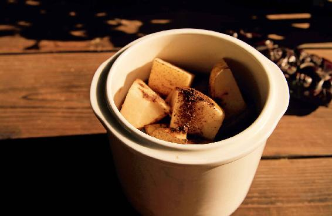
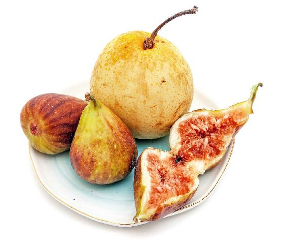
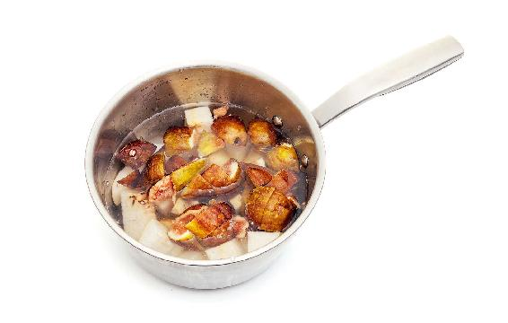
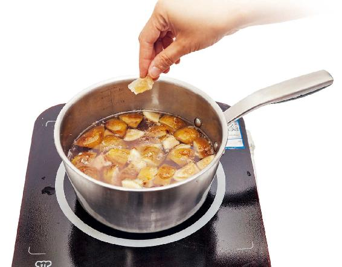
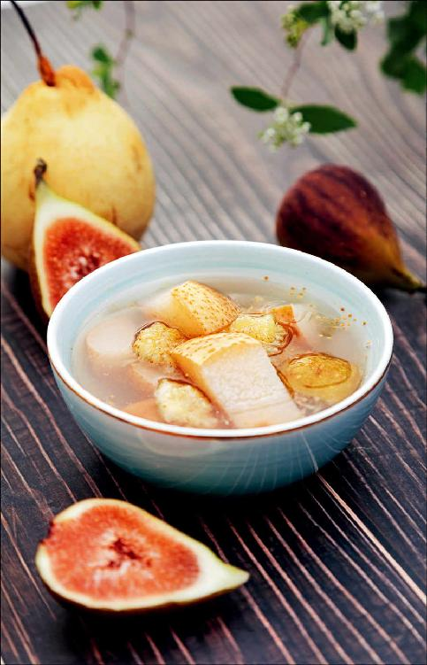

有一道传统的药膳叫作秋梨膏，很多朋友可能都吃过，它是用梨和一些中药熬煮出来的。而红酒炖梨就相当于一个家庭简易版的秋梨膏。
它和秋梨膏的功效有一些相似，都是可以润肺、止咳、清肺热的，也可以滋阴。
梨是在秋天上市的一种很应季的水果，往往也把它叫作秋梨。秋天是养肺的季节，梨就是一个养肺的水果，因此，在秋天吃梨是非常应时的。
但梨有一个不好的地方，就是它非常寒凉。身体火特别大、内热特别重的朋友，是可以直接吃生梨的。而其他大多数人，其实都不太适合多吃生梨，我尤其不太建议给小孩子多吃生梨。
因为现在的小孩子好多脾胃都是有点寒凉的，跟他们喜欢吃凉的东西，特别是一些凉的饮料、雪糕，还有家长给吃太多的水果有关系。其实，这是现在小孩子的一个通病。所以在秋天的时候，如果您给自家的小孩子吃梨，最好是把梨炖熟了给孩子吃。
梨生吃的时候，它是清身体里的热的，特别是六腑之热。我们身体有五脏六腑，六腑是胃、小肠、大肠、胆、膀胱、三焦。
如果您觉得自己平时内热（包含六腑之热）特别重、火气很大，是可以稍微吃一点生梨的。
熟梨的作用是什么呢？就是滋阴，它可以滋养人体五脏的阴，也就是心、肝、脾、肺、肾的阴。
阴是什么呢？就是人体的水液，当人体内缺乏水液滋润的时候，用梨就可以达到滋润的目的。
很多老师在讲课时，经常会觉得口干舌燥，咽喉也非常干，这时候就可以多吃红酒炖梨来保养咽喉。
而一些有慢性咽炎的朋友，喉咙经常会干痒、痛，也可以多吃一些红酒炖梨来滋润喉咙。
还有一些老年人，觉得自己皮肤干、嘴唇干，吃红酒炖梨也能滋润到皮肤。
因此，这一道红酒炖梨，是可以当作全家人的甜品来吃的，而且不管是凉着吃还是热着吃，都是可以的。
有的人可能想这是用红酒炖的梨，就不敢给小孩子吃了。其实，当您炖梨的时候，只要锅口一直敞着，那么，酒味就会在炖的过程中散掉，小孩子吃也就没问题了。

如果您是一个特别怕酒精的人，能不能吃呢？那就看平时您能不能吃放过料酒来炖煮的菜，如果可以，那么这道红酒炖梨一般来说您也是可以吃的。
您还可以根据自己的身体状况来选择放红酒的多少。如果您是一个特别怕酒精的人，就可以少放一点红酒，加一点水，然后多放一点丁香粉。
有三种情况是不适合吃红酒炖梨的。
第一，痰特别多的时候不要吃。如果是喉咙干、痒、痛，以及口干渴的朋友就适合吃。
第二，正在患风寒感冒的人不要吃，等感冒好了以后才可以吃。
第三，正在拉肚子的朋友不要吃。因为红酒炖梨其实还有一定的通便秘的作用，便秘的朋友是可以多吃一点的。
秋天,正逢新鲜的无花果上市，我要送给教师朋友们一道食方——无花果炖梨。无花果炖梨，专治讲话过多引起的各种咽喉不适。
无花果炖梨

原料：无花果（3〜5个）、秋梨（1个）。

做法：
1.取3〜5个无花果，把它们切成块，梨也连皮带核切成块。

2.锅里加上清水，把无花果块和梨块一起下锅炖煮，煮到差不多的时候加入冰糖，再煮一会儿就可以起锅了。
允斌叮嘱：
这道食方的做法跟红酒炖梨的做法不一样，是不需要收汁的，因为我们不仅要吃里面的无花果肉和梨肉，还要喝炖出来的汁水。汁水是这道食方的精华。

无花果炖梨有什么作用呢？它对教师、主持人，还有一些从事客服或者销售的朋友，也就是平常说话说得比较多的朋友都是有好处的。
当我们平常说话过多的时候，常常就会感觉咽喉不适，有些朋友甚至患有慢性咽喉炎、声带小结等。这也是教师、主持人等说话比较多的人的职业病。
很多平时说话多的朋友都会非常注意保养咽喉，教师朋友们应该也喝过不少的护嗓茶。但我们要注意一点，就是天天说话很多的时候，其实伤的不仅仅是咽喉，它还消耗了大量的肺气。
说话越多，特别像老师在课堂上大声说话，往往耗气很多，因此说话很多的人经常会有一个毛病——气短，还会有慢性咽炎的各种症状。